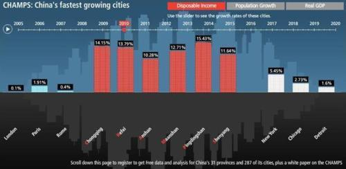

Wed, 24 Nov 2010 13:44:00 · china · shanghai · urban
The rise of China's inland cities visualized

The Economist Intelligent Unit’s Access China services has some pretty cool visualizations of where real future growth of China’s economy lies. Hint: It’s not in Shanghai. Read full coverage here.